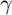
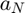
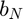
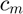
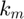

Predictive theoretical model of PER # 2
Model without coding on AWGN channel using EVT.
Contents
Syntax
PER = model_2(SNR, M, r, l)
Description
The model_2(SNR, M, r, l) function is a mathematical analytical model using EVT (Extreme Value Theory) for the calculation of PER. This model is described based on a SNR value. It is given by the equation:

Where  is the SNR and  and  are constants that depend on the modulation scheme. The values of  and  which are used to calculate the parameters of and , are constants that depend on the modulation used, these values are defined by the IEEE 802.11 standard and specified below.

Input Arguments
- SNR
SNR value.
- M
Modulation scheme.
- r
Coding rate.
- l
Packet length in bits.
Output arguments
- PER
Calculated PER value.
Examples
The model_2(SNR, M, r, l) function is called.
function PER = model_2(SNR, M, r, l)
The values are defined based on the modulation scheme. The table of constants cm and km also is based on the modulation scheme, where the first column represents the value of and the second one the value of . Also each row correspond to BPSK, QPSK, 16-QAM and 64-QAM, respectively.
SNR = 10.^(SNR/10);
m = log2(M);
v = 6*m*r;
ne = 10/v;
c = [ 1 2;
1 2;
3/4 4/5;
7/12 2/7;
];
The values of the constants are chosen depending on the modulation scheme.
switch M case 2 f=1; case 4 f=2; case 16 f=3; case 64 f=4; end
Assignment of and constants.
cm = c(f,1);
km = c(f,2)*ne;
The parameters an and bn are calculated based on the equations below. Where e is the number of Euler, L is the size of the packet in bits, and are constants previously assigned and the value of erf is the inverse error function that can be calculated with an independent function .

an = (2/km)*( erfinv(1 - 2/(l*cm))).^2 ;

bn = (2/km)*( erfinv(1 - 2/(l*cm*exp(1)))).^2 - an;
The PER is calculated with the corresponding formula.
PER = 1 - exp( -exp( - (SNR - an) / (bn) ) );
if(PER<0)
PER = 1;
end
end
See also